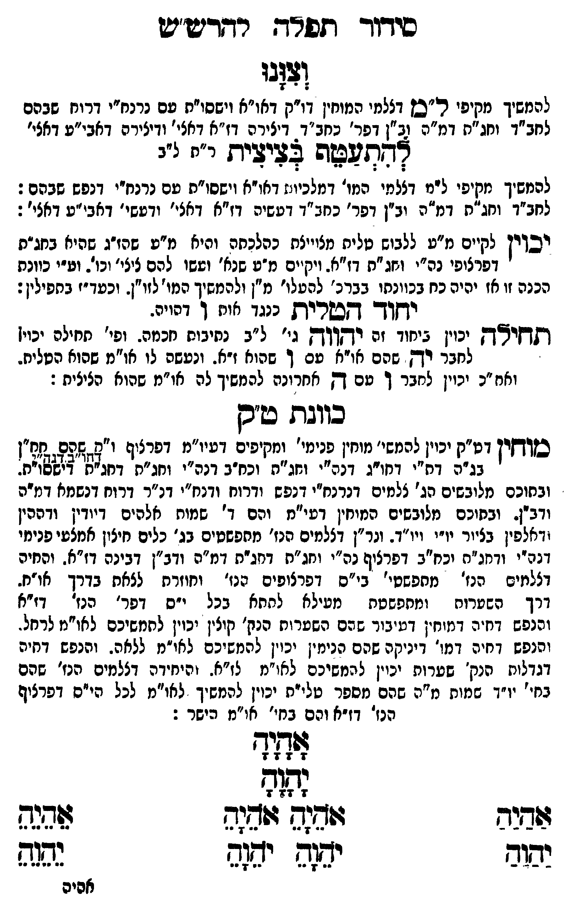

Neue Klartextfassung
וצונו [להמשיך מקיפי ל"ם דצלמי המוחין דו"ק דאו"א וישסו"ת עם נרנח"י דרוח שבהם לחב"ד וחג"ת דמ"ה וב"ן דפר' כחב"ד דיצירה דז"א דאצי' ודיצירה דאבי"ע דאצי'] להתעטף בציצית [ר"ת ל"ב] [להמשיך מקיפי ל"ם דצלמי המו' דמלכיות דאו"א וישסו"ת עם נרנח"י דנפש שבהם: לחב"ד וחג"ת דמ"ה וב"ן דפר' כחב"ד דעשיה דז"א דאצי' ודעשי' דאבי"ע דאצי':] [יכוין לקיים מ"ע ללבוש טלית מצוייצת כהלכתה והיא מ"ע שהז"ג שהיא בחג"ת דפרצופי נה"י וחג"ת דז"א. ויקיים מ"ע שנא' ועשו להם ציצי' וכו'. וע"י כוונת הכנה זו אז יהיה כח בכוונתו בברכ' להעלו' מ"ן ולהמשיך המו' לזו"ן. וכעד"ז בתפילין:] ■ יחוד הטלית כנגד אות ו דהויה. ■ תחילה יכוין ביחוד זה יהוה [גי' ל"ב נתיבות חכמה. ופי' תחילה יכוין לחבר יה שהם או"א עם ו שהוא ז"א. ונעשה לו או"מ שהוא הטלית. ואח"כ יכוין לחבר ו עם ה אחרונה להמשיך לה או"מ שהוא הציצית:] ■ כוונת ט"ק ■ [מוחין דט"ק יכוין להמשי' מוחין פנימי' ומקיפים דעיו"מ דפרצוף ו"ק שהם חח"ן דחו"ב דנה"י בג"ה דת"י דחו"ג דנה"י וחג"ת וכח"ב דנה"י וחג"ת דחג"ת דישסו"ת. ובתוכם מלובשים הג' צלמים דנרנח"י דנפש ודרוח ודנח"י דנ"ר דרוח דנשמה דמ"ה ודב"ן. ובתוכם מלובשים המוחין דעיו"מ והם ד' שמות אלהים דיודין ודההין ודאלפין בציור יו"י ויו"ד. ונר"ן דצלמים הנז' מתפשטים בג' כלים חיצון אמצעי פנימי דנה"י ודחג"ת וכח"ב דפרצוף נה"י וחג"ת דחג"ת דמ"ה ודב"ן דבינה דז"א. והחיה דצלמים הנז' מתפשטי' בי"ס דפרצופים הנז' וחוזרת לצאת בדרך או"ח. דרך השערות ומתפשטת מעילא לתתא בכל י"ס דפר' הנז' דז"א והנפש דחיה דמוחין דעיבור שהם השערות הנק' קולין יכוין להמשיכם לאו"מ לרחל. והנפש דחיה דמו' דיניקה שהם הנימין יכוין להמשיכם לאו"מ ללאה. והנפש דחיה דגדלות הנק' שערות יכוין להמשיכם לאו"מ לז"א. והיחידה דצלמים הנז' שהם בחי' יו"ד שמות מ"ה שהם מספר טלי"ת יכוין להמשיך לאו"מ לכל הי"ס דפרצוף הנז' דז"א והם בחי' או"מ הישר:] אָהָיָהָ יָהָוָהָ === טבלה === [טור ימין] אַהַיַהַ יַהַוַהַ [טור אמצעי] אֹהֵיָהֵ אֹהֵיָהֵ יֹהֵוָהֵ יֹהֵוָהֵ [טור שמאל] אֵהֵיֵהֵ יֵהֵוֵהֵ === סוף טבלה ===
Original gegen neue OCR · Niqqud für Vergleich ausgeblendet
Original
וצונו [להמשיךK115-001 מקיפי ל"םK115-002 דצלמי המוחין דו"ק דאו"א וישסו"ת עם נרנח"י דרוח שבהם לחב"ד וחג"ת דמ"ה וב"ןK115-003 דפר' כחב"דK115-004 דיצירה דז"א דאצי' ודיצירהK115-005 דאבי"ע דאצי'] להתעטף בציצית [ר"ת ל"ב] [להמשיךK115-006 מקיפי ל"םK115-007 דצלמי המו' דמלכיותK115-008 דאו"א וישסו"ת עם נרנח"י דנפש שבהם: לחב"ד וחג"תK115-009 דמ"ה וב"ןK115-010 דפר' כחב"ד דעשיה דז"א דאצי' ודעשי'K115-011 דאבי"ע דאצי':] [יכויןK115-012 לקיים מ"ע ללבוש טלית מצוייצת כהלכתהK115-013 והיא מ"ע שהז"ג שהיא בחג"ת דפרצופי נה"י וחג"ת דז"א. ויקיים מ"ע שנא'K115-014 ועשו להם ציצי' וכו'. וע"יK115-015 כוונת הכנה זו אז יהיה כח בכוונתו בברכ' להעלו'K115-016 מ"ן ולהמשיך המו' לזו"ן.K115-017 וכעד"ז בתפילין:] ■ יחוד הטליתK115-018 כנגד אות וK115-019 דהויה. ■ תחילהK115-020 יכוין ביחודK115-021 זה יהוה [גי'K115-022 ל"ב נתיבותK115-023 חכמה. ופי' תחילה יכוין לחבר יהK115-024 שהם או"א עם וK115-025 שהוא ז"א. ונעשה לו או"מ שהוא הטלית.K115-026 ואח"כ יכוין לחבר ו עם הK115-027 אחרונה להמשיך לה או"מ שהוא הציצית:] ■ כוונת ט"ק ■ [מוחיןK115-028 דט"ק יכוין להמשי' מוחין פנימי' ומקיפים דעיו"מ דפרצוף ו"ק שהם חח"ן דחו"ב דנה"י בג"ה דת"יK115-029 דחו"ג דנה"י וחג"ת וכח"בK115-030 דנה"י וחג"ת דחג"ת דישסו"ת. ובתוכםK115-031 מלובשים הג' צלמים דנרנח"י דנפש ודרוח ודנח"י דנ"ר דרוח דנשמהK115-032 דמ"ה ודב"ן. ובתוכםK115-033 מלובשים המוחין דעיו"מK115-034 והם ד' שמותK115-035 אלהים דיודין ודההין ודאלפיןK115-036 בציור יו"י ויו"ד. ונר"ן דצלמים הנז' מתפשטיםK115-037 בג' כלים חיצון אמצעי פנימיK115-038 דנה"י ודחג"ת וכח"בK115-039 דפרצוף נה"י וחג"ת דחג"ת דמ"ה ודב"ן דבינה דז"א. והחיה דצלמים הנז' מתפשטי' בי"סK115-040 דפרצופים הנז' וחוזרת לצאתK115-041 בדרך או"ח. דרך השערות ומתפשטתK115-042 מעילא לתתא בכל י"סK115-043 דפר' הנז' דז"אK115-044 והנפש דחיה דמוחין דעיבור שהם השערותK115-045 הנק' קוליןK115-046 יכוין להמשיכם לאו"מK115-047 לרחל. והנפש דחיה דמו' דיניקה שהם הנימין יכוין להמשיכם לאו"מ ללאה.K115-048 והנפש דחיה דגדלותK115-049 הנק' שערות יכויןK115-050 להמשיכם לאו"מ לז"א. והיחידה דצלמים הנז' שהם בחי' יו"ד שמותK115-051 מ"ה שהם מספר טלי"תK115-052 יכוין להמשיך לאו"מ לכל הי"ס דפרצוף הנז' דז"א והם בחי' או"מ הישר:] אהיה יהוה === טבלה === [טור ימין] אהיה יהוה [טור אמצעי] אהיה אהיה יהוה יהוה [טור שמאל] אהיה יהוה === סוף טבלה ===K115-053
OCR · fehlbar
סידוך תפרד. רדדט"ט (ד[גו להמשיךK115-001 מקיפי ר"סןK115-002 דצלמי המוחין דו"ק דאו"א וישסו"ת עם נרנח"י דרוח שבהם לחב"ד וחג"ת דמ"ה (ב"ןK115-003 דפר' כחב"ד.K115-004 דיצירה דז"א דאצי' ודיצירהםK115-005 דאבי"ע דאצי' אלוצבנזש איציא ר") ייי להמשיךK115-006 מקיפי ל"מK115-007 דצלמי המו' דמלכיו::K115-008 דאו"א וישסו"ת עם נרנח"י דנפש שבהם: לחב"ד וחג"חK115-009 דמ"ה יב"ןK115-010 דפר' כחב"ד דעשיה דז"א דאצי' ודטשי'K115-011 דאבי"ע דאצי': יכויןK115-012 לקיים מ"ע ללבוש טלית מצוייצת כהלכחפK115-013 והיא מ"ע שהז"ג שהיא בחג"ת דפרצופי נה"י וחג"ת דז"א. (יקיים מ"ט שבא'K115-014 ועשו להם ציצי' וכו'. וט"יK115-015 כוונת הכנה זו אז יהיה כח בכוונתו בברכ' להטלו'K115-016 מ"ן ולהמשיך המו"לזו"ן.K115-017 וכעד"ז בתפילין: ידץיך- קקשרין]K115-018 כנגד אות -K115-019 דהויה. תדיא"ךקK115-020 יכוין ציחודK115-021 זה ידץודךדק גי'K115-022 ל"ב נתיבוחK115-023 חכמה. ופי' תחילה יכוין לחבד רקK115-024 שהם או"א טם ךK115-025 שהוא ז"א. ונעשה לו או"מ שהוא הטליח.K115-026 ואח"כ יכוין לחבר ך טם דץK115-027 אחרונה להמשיך לה או"מ שהוא הציצית : כווגת טס סוזיןK115-028 דט"ק יכוין להמשי' מוחין פנימי' ומקיפים דעיו"מ דפרציף ו"חחזשאלס . ([ח"] ף זז 22 זז זז 2 22 ז6 ז(זצצשז] ' בג"ם דח"יK115-029 דחו"ג דנה"י וחג"ת ' וכח-בK115-030 דנה"י וחג"ח דחג"צן צזשאו"ת. ובחוכםK115-031 מלובשים הג' צלמים דנרנח"י דנפש ודרוח ודנח"י דנ"ר דרוח דנשמאK115-032 דמ"ה ודב. ובחוכםK115-033 מלובשים המוחין דעי"מK115-034 והם ד' שמוחK115-035 אלהים דיודין ודההין יאלפיןK115-036 בציור יו"י ויו"ד. ונר"ן דצלמים הנז' מחפשטיםK115-037 בג' כלים חיצון אמצעי פנייK115-038 דנה"י ודחג"ח יכח"בK115-039 דפרצוף נה"י וחג"ת דחג"ת דמ"ה ודב"ן דבינה דז"א. והחיה דצלמים הנז' מחפשטי' בי"םK115-040 דפרצופים ףנז' וחוזרח לצאחK115-041 בדרך או"ח. דרך השטרות ומחפשטחK115-042 מעילא לתתא בכל י"ס.K115-043 דפר' הגז -דז"אK115-044 והנפש דחיה דמוחין דעיבור שהם השערוחK115-045 הנק' קוציןK115-046 יכוין לחחשיכם לאו"נK115-047 לרחל. והנפש דחיה דמו' דיניקה שהם הנימין יכוין להמשיכם לאי"מ ללאה -K115-048 והנפש דחיה דגדלוחK115-049 הנק' שטרות יבייןK115-050 להמשיכם לאו"מ לז"א. והיחידה דצלמים הנז' שהם בחי' יו"ד שגזותK115-051 מ"ה שהם מספר טלייתK115-052 יכוין להמשיך לאו"מ לכל הי"ס דפרצוף הנז' דז"א והם בחי' אי"מ הישר : לפ(ד[יח 7 1 7 7 נד[ז- 72 774 74 שבנס ווש(ש וזשנש שדגד יוב ימזה יש(ש גגצש אסיםK115-053